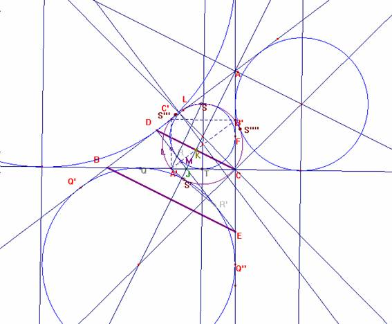
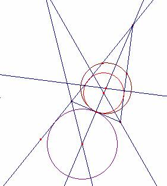
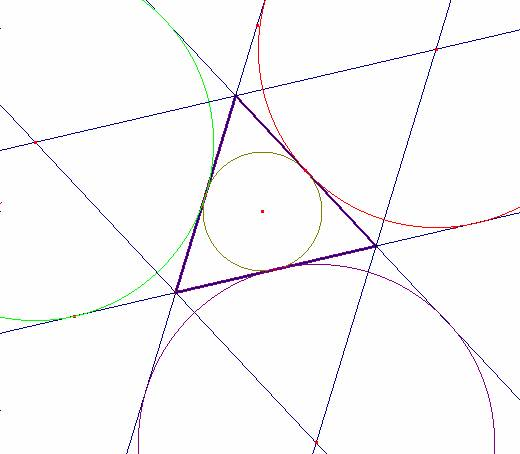

Sortais Y, R. (1997): La géométrie du triangle. Hermann, editeurs des ciences et des arts ( Pág. 192)
Traducción: Ricardo Barroso Campos.
Profesor Titular de Escuela Universitaria
Departamento de Didáctica de las Matematicas. Universidad de Sevilla. España.
Teorema de Feuerbach y puntos de Feuerbach.
3ª parte: Teorema de Feuerbach
La circunferencia de Euler de un triángulo es tangente a las circunferencias inscrita y exinscritas.
Los cuatro puntos de tangencia se denominan puntos de Feuerbach.
Nociones utilizadas: 1ª y 2ª parte.

Sea ABC el triángulo no isósceles. Sea DE = d.
Por el teorema preliminar, A’ no es de la circunferencia J ni de Ja, pues en caso contrario sería isósceles.
La recta d es tangente a la circunferencia J en R y a
La potencia de A’ respecto a la circunferencia inscrita es PJ (A’) =A’T 2.
Por los lemas es: A’M * A’B’ = A’K 2, y además, A’K 2 = A’T 2
Luego es A’M *A’B’ = PJ (A’), con M de d.
Además, es A’L *A’C’ = A’K 2, y además, A’K 2 = A’T 2
Luego es A’L *A’C’ = PJ (A’), con L de d.
Por el teorema preliminar, pues : Los puntos B’ y C’ pertenecen a una circunferencia T que contiene a A’ y es tangente a la circunferencia J. La circunferencia T es así la de los nueve puntos de Euler.
El punto de tangencia es el punto S donde A’R corta a la circunferencia J
La potencia de A’ respecto a la circunferencia exinscrita Ja es PJa (A’) =A’Q 2.
Por los lemas es: A’M * A’B’ = A’K 2, y además, A’K 2 = A’Q 2
Luego es A’M *A’B’ = PJa (A’), con M de d.
Además, es A’L *A’C’ = A’K 2, y además, A’K 2 = A’Q 2
Luego es A’L *A’C’ = PJa (A’), con L de d.
Por el teorema preliminar, pues : Los puntos B’ y C’ pertenecen a una circunferencia T2 que contiene a A’ y es tangente a la circunferencia Ja. La circunferencia T2 es así T, la de los nueve puntos de Euler.
El punto de tangencia es el punto S’ donde A’R’ corta a la circunferencia Ja
Así, haciendo las mismas construcciones para Jb y Jc, tenemos el teorema de Feuerbach:
La circunferencia de Euler de un triángulo es tangente a las circunferencias inscrita y exinscritas.
Si el triángulo es isósceles supongamos por ejemplo, AB =AC.
La circunferencia inscrita J y la exinscrita Ja son tangentes en A’ a BC:

Así, la propiedad anterior es cierta.
Si el triángulo es equilátero, la inscrita coincide con la de los nueve puntos, y es tangente en los puntos medios a las otras tres.
